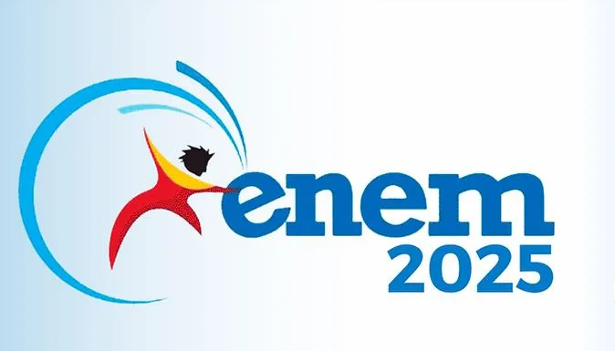
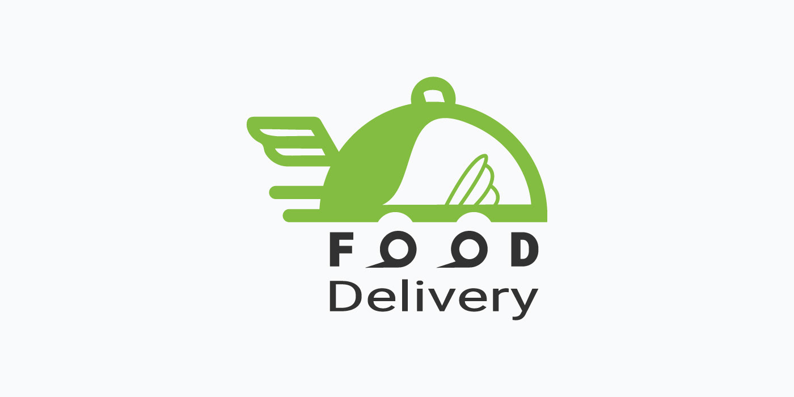
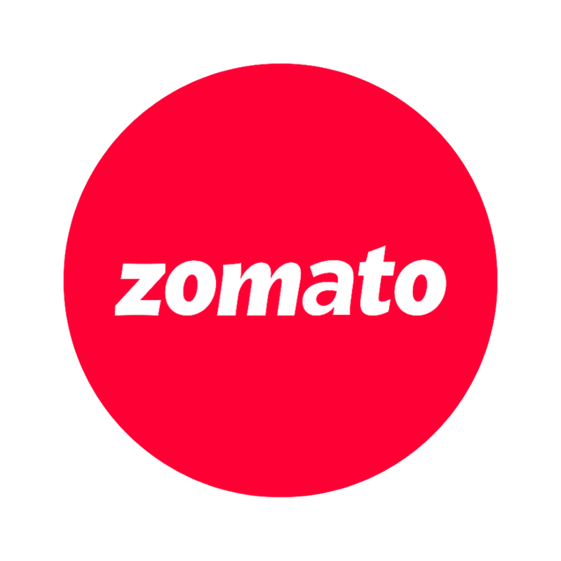

Análise e Metodologias
- Python, Excel, Scrum e Kanban.
Analista de Dados, Engenheiro Eletricista formado pelo IFBA e Técnico em Eletrotécnica pela FBE. Minha trajetória profissional reúne cerca de 5 anos de experiência combinando análise de dados, engenharia, processos de negócio e automações para apoiar decisões gerenciais, identificar oportunidades e melhorar resultados. Passei por empresas como a Neoenergia Coelba e a Engepack Embalagens, atuando com análise de dados, dashboards, KPIs e automação de processos. Entre os projetos de maior impacto, destaco:
Atualmente, concentro meu desenvolvimento em Ciência de Dados e aprofundo conhecimentos em Estatística, Machine Learning, Engenharia de Dados e Cloud, com o objetivo de evoluir para os próximos passos da minha carreira.

Projeto voltado à inspeção, limpeza, padronização e validação dos Microdados do ENEM 2025.
O processo foi desenvolvido de forma reproduzível, com versionamento, ambiente isolado, documentação e testes de qualidade, gerando uma base limpa em formato Parquet e pronta para análise.

Dashboard gerencial interativo para análise de dados logísticos e de desempenho de uma empresa de food delivery, desenvolvido a partir de um processo de ETL com Python.
A aplicação permite acompanhar indicadores táticos e estratégicos nas visões da empresa, dos entregadores e dos restaurantes, transformando dados operacionais em informações para a tomada de decisão.

Dashboard analítico focado na exploração de dados globais de um marketplace de restaurantes, com indicadores organizados nas visões de países, cidades e restaurantes.
A aplicação permite investigar alcance de mercado, diversidade culinária, avaliações, preços e serviços, convertendo dados brutos em uma ferramenta de navegação estratégica.